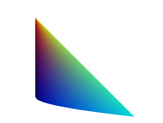
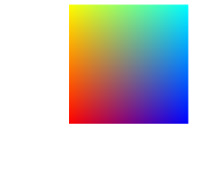
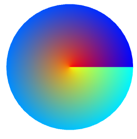
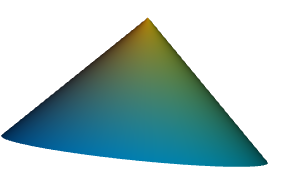

Parametric Curves and Parametric Surfaces
Introduction
This page describes parametric curves and surfaces and how to generate them using my public-domain HTML 3D Library.
Download the latest version of the library at the HTML 3D Library's Releases page.
Contents
Introduction
Contents
What Is a Parametric Surface?
Why two variables?
Parametric Surfaces in the HTML 3D Library
Chaining Surface Functions
Parametric Curves
Generating Parametric Curves
Curve and Surface Evaluators in the HTML 3D Library
Demos
Creating Your Own Curves and Surfaces
Other Pages
What Is a Parametric Surface?
A parametric surface is a surface generated by evaluating the results of a vector function. This vector function takes two numbers, U and V, and returns a 3D point, X, Y, and Z. Each (U, V) point corresponds to an (X, Y, Z) point that lies on the surface.
A vector function in 3D is a combination of three functions, one for each dimension:
- F(u, v) = [ x(u, v), y(u, v), z(u, v) ];
The x function returns an X coordinate given u and v, and likewise for y and z. Since the z function returns a Z coordinate, the surface will be in 2D if z always returns the same value.
For example, if we have a parametric surface defined by the following functions:
- x(u, v) = u * v
- y(u, v) = -u
- z(u, v) = u * sqrt(v)
and we evaluate the UV point (2, 4), then we have:
- F(2, 4) = [ 2 * 4, -2, 2 * sqrt(4) ];
- F(2, 4) = [ 8, -2, 4 ];
So (8, -2, 4) is one point that lies on this parametric surface, and any other point on the surface can be found by evaluating different UV points. By the way, the surface looks like this:

Why two variables?
The surface functions take two variables, u, and v, because a parametric surface can be a seen as a "warped" version of a rectangular grid. The vector function "warps" this grid into a three-dimensional surface.
Parametric Surfaces in the HTML 3D Library
The HTML 3D Library supports parametric surfaces using a class named
SurfaceBuilder. It helps
generate vertex coordinates and other attributes using a parametric surface
function. The following helper function, makeMesh, generates a parametric surface mesh.
A function similar to the makeMesh
function presented here is included in the demos that come with the HTML 3D Library.
The comments explain how makeMesh works in detail.
function makeMesh(func,resolutionU, resolutionV){
"use strict";
if(typeof resolutionV === "undefined" || resolutionV === null)resolutionV = resolutionU;
if(typeof resolutionU === "undefined" || resolutionU === null)resolutionU = 50;
if(typeof resolutionV === "undefined" || resolutionV === null)resolutionV = 50;
// define a color gradient evaluator for
// demonstration purposes. Instead of X, Y, and Z,
// generate a Red/Green/Blue color based on
// the same parameters U and V as the surface
// function for 3D points.
var colorGradient = {
"evaluate":function(u, v) {
return [1 - u, v, u];
}
};
return new H3DU.SurfaceBuilder()
.positionNormal(func)
.attribute(colorGradient, H3DU.Semantic.COLOR)
// Evaluate the surface and generate a triangle
// mesh, using resolution+1 different U coordinates,
// and resolution+1 different V coordinates.
// Instead of H3DU.Mesh.TRIANGLES, we could use
// H3DU.Mesh.LINES to create a wireframe mesh,
// or H3DU.Mesh.POINTS to create a point mesh.
.evalSurface(H3DU.Mesh.TRIANGLES, resolutionU, resolutionV)
.toMeshBuffer();
}
In the HTML 3D Library, surface evaluator objects define a method, evaluate,
which returns a 3D point given a U parameter and a V parameter. (By default, U and
V each range from 0 through 1.)
The following code is a very simple surface evaluator object.
var evaluator = {
"evaluate":function(u, v){
// Take the U parameter as the X coordinate,
// the V parameter as the Y coordinate, and 0 as
// the Z coordinate.
return [u, v, 0];
}
}
That evaluator simply generates a square at the top-right quadrant:

And the following evaluator generates a circle:
var evaluator = {
"evaluate":function(u, v){
// Return circle coordinates.
return [u*Math.cos(v),u*Math.sin(v),0];
},
// Declare the usual range of the coordinates
"endPoints":function(){ return [0,1,0,Math.PI*2]; }
}

Now here's the interesting part: This evaluator returns not a circle, but a cone, whose length runs along the negative Z axis:
var evaluator = {
"evaluate":function(u, v){
// Return cone coordinates, using the u
// parameter as the Z axis.
return [u*Math.cos(v),u*Math.sin(v),-u];
},
// Declare the usual range of the coordinates
"endPoints":function(){ return [0,1,0,Math.PI*2]; }
}
The following shape was rotated to show the Z axis; the rotation isn't perfect.

Note that all three examples above use a value named evaluator. To generate
a mesh with an evaluator and add it to the 3D scene, you then need to do:
// Assumes that a Scene3D object named _scene_ was previously defined.
// Create a 3D shape using the makeMesh method given earlier on this page
var shape = new H3DU.Shape(makeMesh(evaluator));
// Add the shape to the 3D scene
scene.addShape(shape);
The generated 3D mesh from a parametric surface is just like any
other mesh, and the same functions and methods you use for other meshes
can be used on this mesh as well. For more information, see the
overview page
and the API references for the H3DU.Mesh and
Shape classes.
Chaining Surface Functions
The technique of using surface evaluator objects is very flexible. In fact, you can chain evaluators, using the output of one evaluator as the input of another evaluator. This can be used to transform the surface's points to new positions.
As an example, we'll define a new evaluator that shifts the position
of a parametric surface. It takes an existing surface evaluator and the X, Y, and
Z of how many units to shift the surface. Note that this class includes its
own evaluate method, allowing itself to be passed to the H3DU.SurfaceBuilder class's method
or the makeMesh method above.
function SurfaceShifter(evaluator, x, y, z) {
// Shift the surface by X units.
this.x = x;
// Shift the surface by Y units.
this.y = y;
// Shift the surface by Z units.
this.z = z;
this.evaluator = evaluator;
// Define the surface shifter function
this.evaluate = function(u, v){
// Get the coordinates from the source evaluator
var retval = this.evaluator.evaluate(u, v);
// Shift the coordinates
retval[0]+=this.x;
retval[1]+=this.y;
retval[2]+=this.z;
// And return the new coordinates.
return retval;
}
this.endPoints=function(){
return this.evaluator.endPoints()
}
}
And here's an example of its use. We'll take the circle surface given above, and create a SurfaceShifter object that shifts the circle by 3 units horizontally and vertically (by default, the circle will be centered at the origin (0, 0, 0)).
// This is the circle surface from before
var evaluator = {
"evaluate":function(u, v){
// Extend the range of v
v*=Math.PI*2;
// Return circle coordinates.
return [u*Math.cos(v),u*Math.sin(v),0];
},
"endPoints":function() { return [0,Math.PI*2] }
}
// Create a shifter that results in the circle being moved 3 units
// up and 3 units to the right
evaluator = new SurfaceShifter(evaluator, 3, 3, 0);
Parametric Curves
The HTML 3D library also includes support for generating parametric curves. A parametric curve is a curve generated by a vector function, like a parametric surface, except now, the function only uses a single variable, as shown below:
- C(u) = [ x(u), y(u), z(u) ];
As before, the x, y, and z functions return the corresponding coordinates of the curve. And each (U) point corresponds to an (X, Y, Z) point that lies on the curve.
The curve function takes a single u variable because a parametric curve can be a seen as a "warped" version of a line.
One simple example of a parametric curve is a circle. In fact, the same source code for the circle surface given above can also serve as the parametric curve function, since it only uses the variable u, not v.
Note that any surface evaluator that only uses u can easily serve as a parametric curve evaluator, as can any surface in which the v parameter is kept to the same value, such as 0, 1, or any other constant number.
Generating Parametric Curves
The HTML 3D Library's H3DU.CurveBuilder class generates vertices for
a parametric curve.
Use code like the following to generate a mesh describing a parametric
curve. It assumes that evaluator is a parametric curve object, just like
the circle example above.
// Create a curve evaluator
var ev=new H3DU.CurveBuilder()
.position(evaluator)
// Evaluate the curve, using 99 lines (100 points). Alternatively,
// H3DU.Mesh.POINTS can be used.
.evalCurve(H3DU.Mesh.LINES,100);
// Create a mesh describing the curve
var mesh=ev.toMeshBuffer()
Curve and Surface Evaluators in the HTML 3D Library
The HTML 3D Library distribution includes the following evaluators of
curves and surfaces. All the classes named below include an evaluate
method that returns 3D points lying on the curve or surface.
General-purpose curves include:
- B-spline curves. These curves consist of control points (which control the shape of the curve but don't necessarily lie on the curve), and a knot vector, which controls the behavior of the control points. B-spline curves include NURBS curves (nonuniform and rational B-spline curves, with weights and non-uniform knots), making them a powerful way of setting the behavior of a curve. B-Spline curves are created using the H3DU.BSplineCurve class.
- Bézier curves. These are curves in which the first and last control point are the curve's end points. Bézier curves are a subset of B-spline curves and are created using the H3DU.BSplineCurve.fromBezierCurve method.
- Piecewise curves These are curves made up of one or more other curves. Piecewisec curves are created using the H3DU.PiecewiseCurve class.
Special curves include the following. All of these classes are supplemental extras.
- H3DU.Epitrochoid - A curve drawn by a circle rolling along the outside of another circle.
- ** H3DU.Hypotrochoid** - A curve drawn by a circle rolling along the inside of another circle.
- ** H3DU.Trochoid** - A curve drawn by a circle rolling along a straight line.
General-purpose surfaces include:
- Bézier surfaces. 3D surfaces where each grid line is a Bézier curve. Bézier surfaces are created using the H3DU.BSplineSurface.fromBezierSurface method.
- B-Spline surfaces. 3D surfaces where each grid line is a B-Spline or NURBS curve. B-Spline surfaces are created using the H3DU.BSplineSurface class.
Special surfaces include:
- Tubes. 3D surfaces in the form of a "thickened" 3D curve. Tubes are created using the H3DU.CurveTube class, a supplemental extra in the HTML 3D library.
- Surfaces of revolution. Surfaces generated by rotating a 2D curve. Surfaces of revolution are created using the H3DU.SurfaceOfRevolution class, a supplemental extra in the HTML 3D library.
Demos
- surfaces.html - Demonstrates parametric surfaces.
This demo contains several examples of parametric surfaces. The source code defines several classes that create evaluators of parametric surfaces:
new Superellipsoid(xRadius, yRadius, zRadius, n, m)
Creates a "superellipsoid" shape, with a radiusxRadiusalong the X axis,yRadiusalong the Y axis, andzRadiusalong the Z axis. The parametersmandnmay be omitted; the default for each is 1, which creates a normal ellipsoid.new Supertoroid(xRadius, yRadius, zRadius, innerRadius, n, m)
Creates a "supertoroid" shape (with a hole in the middle), with a radiusxRadiusalong the X axis,yRadiusalong the Y axis, andzRadiusalong the Z axis. The inner radius will beinnerRadius. The parametersmandnmay be omitted; the default for each is 1, which creates a normal torus or toroid.new KleinBottle()
Creates a Klein bottle.new MoebiusStrip()
Creates a Möbius strip.
These are only some of the many possible kinds of parametric surfaces.
- demos/bsplinecircles.html - Demonstrates how circles and ellipses can be generated using the
BSplineCurveclass.
Creating Your Own Curves and Surfaces
Two other demos include a formula editor allowing you to experiment with parametric curves and surfaces, and to export them to source code appropriate for use in the Public Domain HTML 3D Library.
- curvesexpr.html - Demonstrates parametric curves, with a custom formula editor.
- surfacesexpr.html - Demonstrates parametric surfaces, with a custom formula editor.
Other Pages
The following pages of mine on CodeProject also discuss this library: